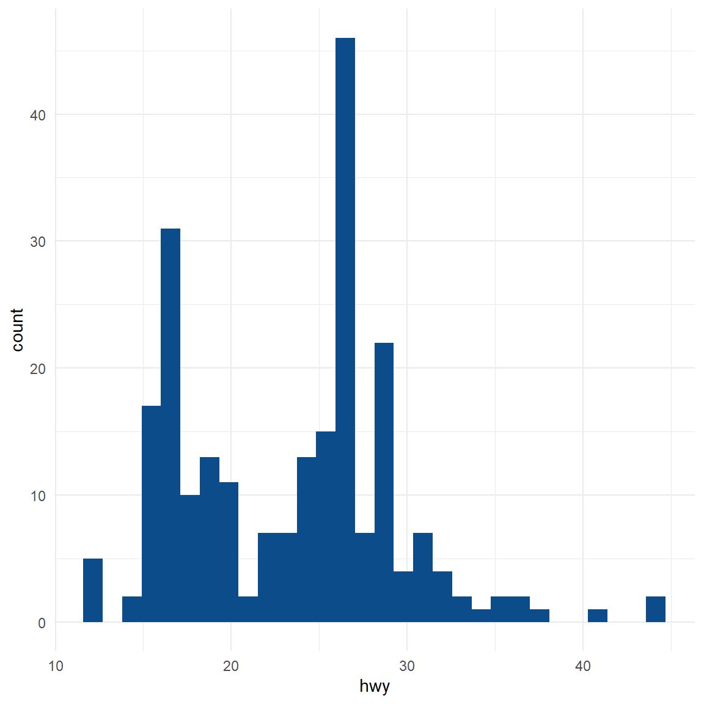
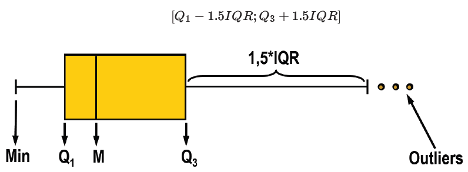
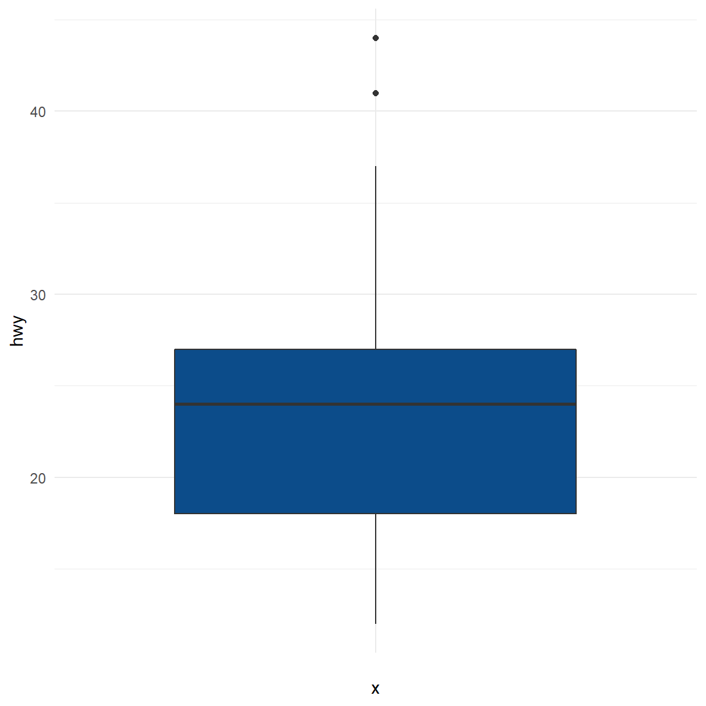
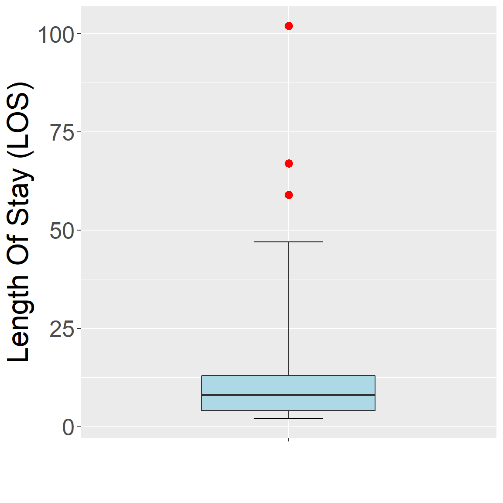
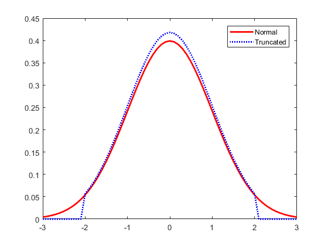
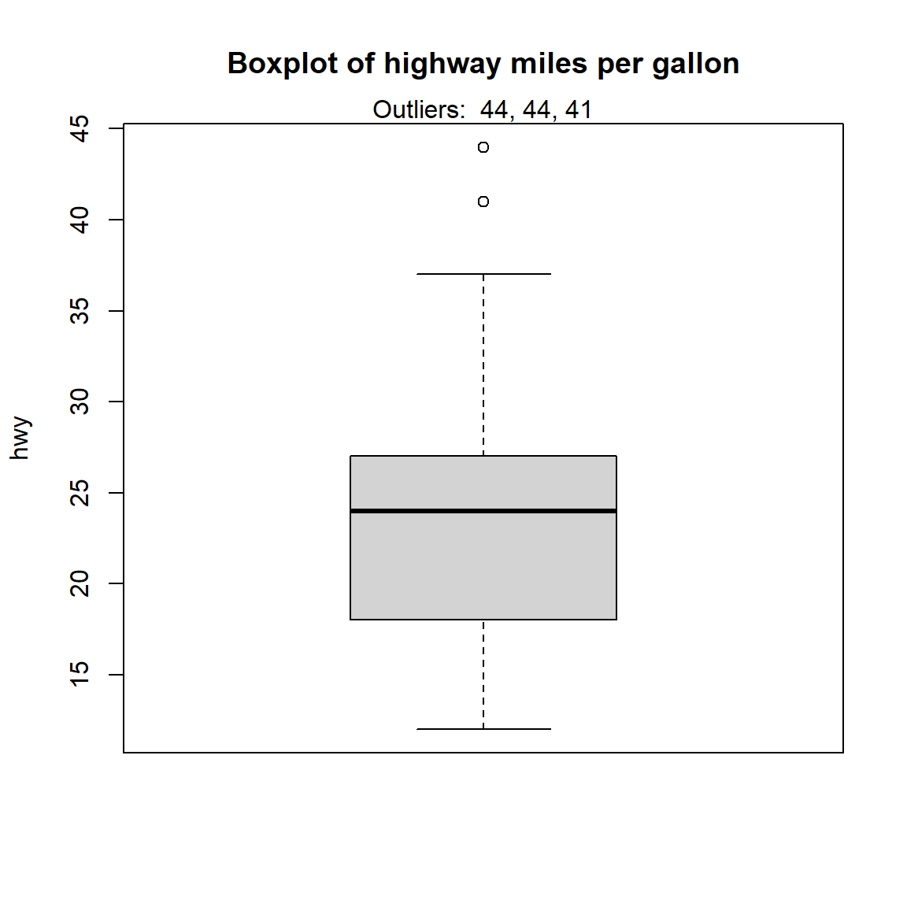
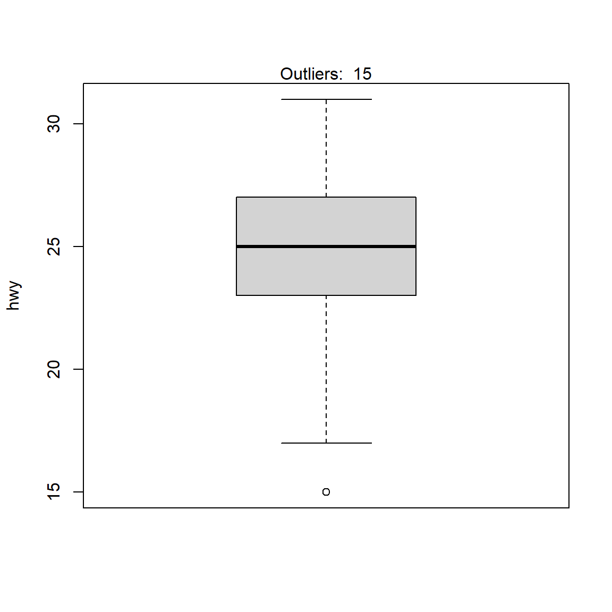

Figure 0.1: Outliers
In this 2nd part, we are going to discuss more technical details of the outlier detection. Outliers are one of those statistical issues that everyone knows about, but most people aren’t sure how to deal with. Most parametric statistics, like means, standard deviations, and correlations, and every statistic based on these, are highly sensitive to outliers.
Finding outliers depends on subject-area knowledge and an understanding of the data collection process. While there is no solid mathematical definition, there are guidelines and statistical tests you can use to find outlier candidates.
Outlier is a simple concept:
they are values that are notably different from other data points, and they can cause problems in statistical procedures.
Removing or keeping an outlier depends on
In general, there are two different types of outliers- univariate and multivariate outliers.
A univariate outlier is a data point that consists of an extreme value on one variable.
A multivariate outlier is a combination of unusual scores on at least two variables.
Because of the outlider different types, outlier detection methods can be divided between univariate methods and multivariate methods that usually for most of the current body of research.
In this post, I am going to focus on the univariate methods only.
Generally, there are 7 different types of methods to detect outliers univariately.
Sorting your datasheet is a simple but effective way to highlight unusual values. Simply sort your data sheet for each variable and then look for unusually high or low values.
See the example below.
# Example data.
ex1 <- data.frame(id=c(1,2,3,4,5),
gender=c("M","F","F","M","M"),
age=c(15, 20, 400, 27, 50))
# sort data by age.
arrange(ex1,age)## id gender age
## 1 1 M 15
## 2 2 F 20
## 3 4 M 27
## 4 5 M 50
## 5 3 F 400As we all know, human’s age cannot be 400. So, we can easily detect that case (id=3) is an outlier. It is caused either from data-entry error or something else.
Boxplots, histograms, and scatterplots can highlight outliers.
Boxplot (interquartile method with fence), histogramsscatterplotsThe scatterplot with regression line shows how most of the points follow the fitted line for the model. However, the circled point does not fit the model well(We will discuss this in the next post).
This type of outlier can be a problem in regression analysis. Given the multifaceted nature of multivariate regression, there are numerous types of outliers in that realm.
One basic way to detect outliers is to draw a histogram of the data.
# use example data
dat <- ggplot2::mpg
summary(dat$hwy)## Min. 1st Qu. Median Mean 3rd Qu. Max.
## 12.00 18.00 24.00 23.44 27.00 44.00ggplot(dat) +
aes(x = hwy) +
geom_histogram(bins = 30L, fill = "#0c4c8a") +
theme_minimal()
From the histogram, there seems to be a couple of observations higher than all other observations (see the bar on the right side of the plot).
In addition to histograms, boxplots are also useful to detect potential outliers. A boxplot helps to visualize a quantitative variable by displaying five common location summary (minimum, median, first and third quartiles and maximum) and any observation that was classified as a suspected outlier using the interquartile range (IQR) criterion (See the method 4).

# using ggplot2:
ggplot(dat) + aes(x = "", y = hwy) +
geom_boxplot(fill = "#0c4c8a") +
theme_minimal()
library(robustbase)
adjbox_stats <- adjboxStats(los)$stats
ggplot(data.frame(los), aes(x = "", y = los)) +
stat_boxplot(geom = "errorbar", width = 0.2, coef = 1.5*exp(3*mc(los))) +
geom_boxplot(ymin = adjbox_stats[1],
ymax = adjbox_stats[5],
middle = adjbox_stats[3],
upper = adjbox_stats[4],
lower = adjbox_stats[2],
outlier.shape = NA,
fill = "lightblue",width = 0.5) +
geom_point(data=subset(data.frame(los),
los < adjbox_stats[1] | los > adjbox_stats[5]),
col = "red", size = 3, shape = 16) +
xlab("") + ylab("Length Of Stay (LOS)") +
theme(text = element_text(size = 25))
Z-scores can quantify the unusualness of an observation when your data follow the normal distribution. Z-scores are the number of standard deviations above and below the mean that each value falls.
To calculate the Z-score for an observation, take the raw measurement, subtract the mean, and divide by the standard deviation. Mathematically, the formula for that process is the following:
\[Z=\frac{X-\mu}{\sigma}\]
Figure 3.1: Normal distribution
The further away an observation’s Z-score is from zero, the more unusual it is. A standard cut-off value for finding outliers are Z-scores of +/-3 or further from zero. By ‘tagging’ or removing the data points that lay beyond a given threshold we are classifying data into outliers and not outliers.

However, if your data don’t follow the normal distribution, this approach might not be accurate.
Note that Z-scores can be misleading with small datasets because the maximum Z-score is limited to \(\frac{n-1}{\sqrt{n}}\).
Also, note that the outlier’s presence throws off the Z-scores because it inflates the mean and standard deviation as we saw earlier. Notice how all the Z-scores are negative except the outlier’s value. If we calculated Z-scores without the outlier, they’d be different! Be aware that if your dataset contains outliers, Z-values are biased such that they appear to be less extreme (i.e., closer to zero).
You can use the interquartile range (IQR), several quartile values, and an adjustment factor to calculate boundaries for what constitutes minor and major outliers. Minor and major denote the unusualness of the outlier relative to the overall distribution of values. Major outliers are more extreme. Analysts also refer to these categorizations as mild and extreme outliers.
The IQR is the middle 50% of the dataset. It’s the range of values between the third quartile and the first quartile (Q3 – Q1).
We can take the IQR, Q1, and Q3 values to calculate the following outlier fences for our dataset: lower outer, lower inner, upper inner, and upper outer. These fences determine whether data points are outliers and whether they are mild or extreme. Values that fall inside the two inner fences are not outliers.
To calculate the outlier fences, do the following:
Take your IQR and multiply it by 1.5 and 3. We’ll use these values to obtain the inner and outer fences. For our example, the IQR equals 0.222. Consequently, 0.222 * 1.5 = 0.333 and 0.222 * 3 = 0.666. We’ll use 0.333 and 0.666 in the following steps.
Calculate the inner and outer lower fences. Take the Q1 value and subtract the two values from step 1. The two results are the lower inner and outer outlier fences. For our example, Q1 is 1.714. So, the lower inner fence = 1.714 – 0.333 = 1.381 and the lower outer fence = 1.714 – 0.666 = 1.048.
Calculate the inner and outer upper fences. Take the Q3 value and add the two values from step 1. The two results are the upper inner and upper outlier fences. For our example, Q3 is 1.936. So, the upper inner fence = 1.936 + 0.333 = 2.269 and the upper outer fence = 1.936 + 0.666 = 2.602.
The IQR method is helpful because it uses percentiles, which do not depend on a specific distribution. Additionally, percentiles are relatively robust to the presence of outliers compared to the other quantitative methods.
It is also possible to extract the values of the potential outliers based on the IQR criterion thanks to the boxplot.stats()$out function:
boxplot.stats(dat$hwy)$out## [1] 44 44 41# Thanks to the which() function it is possible to extract the row number
# corresponding to these outliers:
out <- boxplot.stats(dat$hwy)$out
out_ind <- which(dat$hwy %in% c(out))
out_ind## [1] 213 222 223With this information you can now easily go back to the specific rows in the dataset to verify them, or print all variables for these outliers. It is also possible to print the values of the outliers directly on the boxplot with the mtext() function:
dat[out_ind, ]## # A tibble: 3 x 11
## manufacturer model displ year cyl trans drv cty hwy fl
## <chr> <chr> <dbl> <int> <int> <chr> <chr> <int> <int> <chr>
## 1 volkswagen jetta 1.9 1999 4 manu~ f 33 44 d
## 2 volkswagen new ~ 1.9 1999 4 manu~ f 35 44 d
## 3 volkswagen new ~ 1.9 1999 4 auto~ f 29 41 d
## # ... with 1 more variable: class <chr>boxplot(dat$hwy,
ylab = "hwy",
main = "Boxplot of highway miles per gallon")
# print out outlier
mtext(paste("Outliers: ", paste(out, collapse = ", ")))
This method of outliers detection is based on the percentiles. With the percentiles method, all observations that lie outside the interval formed by the 2.5 and 97.5 percentiles will be considered as potential outliers. Other percentiles such as the 1 and 99, or the 5 and 95 percentiles can also be considered to construct the interval.
The values of the lower and upper percentiles (and thus the lower and upper limits of the interval) can be computed with the quantile() function:
lower_bound <- quantile(dat$hwy, 0.025)
lower_bound## 2.5%
## 14upper_bound <- quantile(dat$hwy, 0.975)
upper_bound## 97.5%
## 35.175According to this method, all observations below 14 and above 35.175 will be considered as potential outliers. The row numbers of the observations outside of the interval can then be extracted with the which() function:
# So the outlier will be
outlier_ind <- which(dat$hwy < lower_bound | dat$hwy > upper_bound)
outlier_ind## [1] 55 60 66 70 106 107 127 197 213 222 223Then their values of highway miles per gallon can be printed:
dat[outlier_ind, "hwy"]## # A tibble: 11 x 1
## hwy
## <int>
## 1 12
## 2 12
## 3 12
## 4 12
## 5 36
## 6 36
## 7 12
## 8 37
## 9 44
## 10 44
## 11 41Alternatively, all variables for these outliers can be printed:
dat[outlier_ind, ]## # A tibble: 11 x 11
## manufacturer model displ year cyl trans drv cty hwy fl
## <chr> <chr> <dbl> <int> <int> <chr> <chr> <int> <int> <chr>
## 1 dodge dako~ 4.7 2008 8 auto~ 4 9 12 e
## 2 dodge dura~ 4.7 2008 8 auto~ 4 9 12 e
## 3 dodge ram ~ 4.7 2008 8 auto~ 4 9 12 e
## 4 dodge ram ~ 4.7 2008 8 manu~ 4 9 12 e
## 5 honda civic 1.8 2008 4 auto~ f 25 36 r
## 6 honda civic 1.8 2008 4 auto~ f 24 36 c
## 7 jeep gran~ 4.7 2008 8 auto~ 4 9 12 e
## 8 toyota coro~ 1.8 2008 4 manu~ f 28 37 r
## 9 volkswagen jetta 1.9 1999 4 manu~ f 33 44 d
## 10 volkswagen new ~ 1.9 1999 4 manu~ f 35 44 d
## 11 volkswagen new ~ 1.9 1999 4 auto~ f 29 41 d
## # ... with 1 more variable: class <chr>There are 11 potential outliers according to the percentiles method. To reduce this number, you can set the percentiles to 1 and 99:
lower_bound <- quantile(dat$hwy, 0.01)
upper_bound <- quantile(dat$hwy, 0.99)
outlier_ind <- which(dat$hwy < lower_bound | dat$hwy > upper_bound)
# print out outlier data
dat[outlier_ind, ]## # A tibble: 3 x 11
## manufacturer model displ year cyl trans drv cty hwy fl
## <chr> <chr> <dbl> <int> <int> <chr> <chr> <int> <int> <chr>
## 1 volkswagen jetta 1.9 1999 4 manu~ f 33 44 d
## 2 volkswagen new ~ 1.9 1999 4 manu~ f 35 44 d
## 3 volkswagen new ~ 1.9 1999 4 auto~ f 29 41 d
## # ... with 1 more variable: class <chr>outliers::scores function calculates normal, t, chi-squared, IQR and MAD scores of given data. There are two aspects to the scores() function.
The example below displays the scores function to identify outliers outside the pre-defined percentile cutoffs.
# generate data
set.seed(1234)
x = rnorm(10)
# z-scores => (x-mean)/sd
outliers::scores(x)## [1] -0.8273937 0.6633811 1.4738069 -1.9708424 0.8157183 0.8929749
## [7] -0.1923930 -0.1641660 -0.1820615 -0.5090247# chi-sq scores => (x - mean(x))^2/var(x)
outliers::scores(x, type="chisq")## [1] 0.68458034 0.44007451 2.17210689 3.88421971 0.66539631 0.79740421
## [7] 0.03701507 0.02695047 0.03314640 0.25910611# t scores
outliers::scores(x, type="t")## [1] -0.8115497 0.6413175 1.5952995 -2.4645688 0.7991765 0.8818782
## [7] -0.1817640 -0.1550094 -0.1719662 -0.4869741# beyond 90th %ile based on chi-sq distribution (TRUE, FALSE)
outliers::scores(x, type="chisq", prob=0.9) ## [1] FALSE FALSE FALSE TRUE FALSE FALSE FALSE FALSE FALSE FALSE# beyond 95th %ile based on chi-sq distribution (TRUE, FALSE)
outliers::scores(x, type="chisq", prob=0.95)## [1] FALSE FALSE FALSE TRUE FALSE FALSE FALSE FALSE FALSE FALSE# beyond 95th %ile based on z-scores
outliers::scores(x, type="z", prob=0.95)## [1] FALSE FALSE FALSE TRUE FALSE FALSE FALSE FALSE FALSE FALSE# beyond 95th %ile based on t-scores
outliers::scores(x, type="t", prob=0.95) ## [1] FALSE FALSE FALSE TRUE FALSE FALSE FALSE FALSE FALSE FALSEAnother method, known as Hampel filter, consists of considering as outliers the values outside the interval(\(I\)) formed by the median, plus or minus 3 median absolute deviations (\(MAD\)): (default as 3, could be different)
\[I=[median-3\times MAD, median+3\times MAD]\] where \(MAD\) is the median absolute deviation and is defined as the median of the absolute deviations from the data’s median:
\[MAD = median(|X_{i} - median(X)|)\]
For this method we first set the interval limits thanks to the median() and mad() functions:
median(dat$hwy)## [1] 24mad(dat$hwy)## [1] 7.413lower_bound <- median(dat$hwy) - 3 * mad(dat$hwy)
lower_bound## [1] 1.761upper_bound <- median(dat$hwy) + 3 * mad(dat$hwy)
upper_bound## [1] 46.239According to this method, all observations below 1.761 and above 46.239 will be considered as potential outliers. The row numbers of the observations outside of the interval can then be extracted with the which() function:
outlier_ind <- which(dat$hwy < lower_bound | dat$hwy > upper_bound)
outlier_ind## integer(0)According to the Hampel filter, there is no potential outlier for the hwy variable.
You can use hypothesis tests to find outliers. Many outlier tests exist, but I’ll focus on one to illustrate how they work. In this post, 3 more formal techniques to detect outliers:
These 3 statistical tests are part of more formal techniques of outliers detection as they all involve the computation of a test statistic that is compared to tabulated critical values (that are based on the sample size and the desired confidence level).
Note that the 3 tests are appropriate only when the data (without any outliers) are approximately normally distributed. The normality assumption must thus be verified before applying these tests for outliers.
The Grubbs test allows to detect whether the highest or lowest value in a dataset is an outlier.
The Grubbs test detects one outlier at a time (highest or lowest value), so the null and alternative hypotheses are as follows.
if we want to test the highest value, or:
if we want to test the lowest value.
If the p-value for this test is less than your significance level, you can reject the null and conclude that one of the values is an outlier. The analysis identifies the value in question.
If you use Grubbs’ test and find an outlier, don’t remove that outlier and perform the analysis again. That process can cause you to remove values that are not outliers.
Note that the Grubbs test is not appropriate for sample size of 6 or less.
\[n\leq6\]
To perform the Grubbs test in R, we use the grubbs.test() function from the {outliers} package:
library(outliers)
test <- grubbs.test(dat$hwy)
test##
## Grubbs test for one outlier
##
## data: dat$hwy
## G = 3.45274, U = 0.94862, p-value = 0.05555
## alternative hypothesis: highest value 44 is an outlierIf you want to do the test for the lowest value, simply add the argument opposite = TRUE in the grubbs.test() function:
test <- grubbs.test(dat$hwy, opposite = TRUE)
test##
## Grubbs test for one outlier
##
## data: dat$hwy
## G = 1.92122, U = 0.98409, p-value = 1
## alternative hypothesis: lowest value 12 is an outlierFor the sake of illustration, we will now replace an observation with a more extreme value and perform the Grubbs test on this new dataset. Let’s replace the 35th row with a value of 230:
dat[35, "hwy"] <- 230
test <- grubbs.test(dat$hwy)
test##
## Grubbs test for one outlier
##
## data: dat$hwy
## G = 13.93778, U = 0.16268, p-value < 2.2e-16
## alternative hypothesis: highest value 230 is an outlierThe p-value is < 0.001. At the 5% significance level, we conclude that the highest value 230 is an outlier.
Similar to the Grubbs test, Dixon test is used to test whether a single low or high value is an outlier. So if more than one outliers is suspected, the test has to be performed on these suspected outliers individually.
Note that- Dixon test is most useful for small sample size (usually \(n\leq25\)).
To perform the Dixon’s test in R, we use the dixon.test() function from the {outliers} package. However, we restrict our dataset to the 20 first observations as the Dixon test can only be done on small sample size (R will throw an error and accepts only dataset of 3 to 30 observations):
subdat <- dat[1:25, ]
test <- dixon.test(subdat$hwy)
test##
## Dixon test for outliers
##
## data: subdat$hwy
## Q = 0.14286, p-value = 0.632
## alternative hypothesis: lowest value 15 is an outlierThe results show that the lowest value 15 is an outlier (p-value = 0.007).
To test for the highest value, simply add the opposite = TRUE argument to the dixon.test() function:
test <- dixon.test(subdat$hwy, opposite = TRUE)
test##
## Dixon test for outliers
##
## data: subdat$hwy
## Q = 0.14286, p-value = 0.632
## alternative hypothesis: highest value 31 is an outlierThe results show that the highest value 31 is not an outlier (p-value = 0.858).
It is a good practice to always check the results of the statistical test for outliers against the boxplot to make sure we tested all potential outliers:
out <- boxplot.stats(subdat$hwy)$out
boxplot(subdat$hwy,
ylab = "hwy")
mtext(paste("Outliers: ", paste(out, collapse = ", ")))
From the boxplot, we see that we could also apply the Dixon test on the value 20 in addition to the value 15 done previously. This can be done by finding the row number of the minimum value, excluding this row number from the dataset and then finally apply the Dixon test on this new dataset:
# find and exclude lowest value
remove_ind <- which.min(subdat$hwy)
subsubdat <- subdat[-remove_ind, ]
# Dixon test on dataset without the minimum
test <- dixon.test(subsubdat$hwy)
test##
## Dixon test for outliers
##
## data: subsubdat$hwy
## Q = 0.25, p-value = 0.6961
## alternative hypothesis: lowest value 17 is an outlierThe results show that the second lowest value 20 is not an outlier (p-value = 0.13).
Rosner’s test for outliers has the advantages that:
Grubbs and Dixon test which must be performed iteratively to screen for multiple outliers), andUnlike Dixon test, note that Rosner test is most appropriate when the sample size is large (\(n\geq20\)). We therefore use the initial dataset, which includes 234 observations.
To perform the Rosner test we use the rosnerTest() function from the {EnvStats} package.
This function requires at least 2 arguments:
k (with k = 3 as the default number of suspected outliers).For this example, we set the number of suspected outliers to be equal to 3, as suggested by the number of potential outliers outlined in the boxplot.
library(EnvStats)
test <- rosnerTest(dat$hwy, k = 3)
test## $distribution
## [1] "Normal"
##
## $statistic
## R.1 R.2 R.3
## 13.937782 3.448536 3.548475
##
## $sample.size
## [1] 234
##
## $parameters
## k
## 3
##
## $alpha
## [1] 0.05
##
## $crit.value
## lambda.1 lambda.2 lambda.3
## 3.652091 3.650836 3.649575
##
## $n.outliers
## [1] 1
##
## $alternative
## [1] "Up to 3 observations are not\n from the same Distribution."
##
## $method
## [1] "Rosner's Test for Outliers"
##
## $data
## [1] 29 29 31 30 26 26 27 26 25 28 27 25 25 25 25 24
## [17] 25 23 20 15 20 17 17 26 23 26 25 24 19 14 15 17
## [33] 27 30 230 29 26 24 24 22 22 24 24 17 22 21 23 23
## [49] 19 18 17 17 19 19 12 17 15 17 17 12 17 16 18 15
## [65] 16 12 17 17 16 12 15 16 17 15 17 17 18 17 19 17
## [81] 19 19 17 17 17 16 16 17 15 17 26 25 26 24 21 22
## [97] 23 22 20 33 32 32 29 32 34 36 36 29 26 27 30 31
## [113] 26 26 28 26 29 28 27 24 24 24 22 19 20 17 12 19
## [129] 18 14 15 18 18 15 17 16 18 17 19 19 17 29 27 31
## [145] 32 27 26 26 25 25 17 17 20 18 26 26 27 28 25 25
## [161] 24 27 25 26 23 26 26 26 26 25 27 25 27 20 20 19
## [177] 17 20 17 29 27 31 31 26 26 28 27 29 31 31 26 26
## [193] 27 30 33 35 37 35 15 18 20 20 22 17 19 18 20 29
## [209] 26 29 29 24 44 29 26 29 29 29 29 23 24 44 41 29
## [225] 26 28 29 29 29 28 29 26 26 26
##
## $data.name
## [1] "dat$hwy"
##
## $bad.obs
## [1] 0
##
## $all.stats
## i Mean.i SD.i Value Obs.Num R.i+1 lambda.i+1 Outlier
## 1 0 24.31197 14.757587 230 35 13.937782 3.652091 TRUE
## 2 1 23.42918 5.965086 44 213 3.448536 3.650836 FALSE
## 3 2 23.34052 5.822073 44 222 3.548475 3.649575 FALSE
##
## attr(,"class")
## [1] "gofOutlier"The interesting results are provided in the $all.stats table:
test$all.stats## i Mean.i SD.i Value Obs.Num R.i+1 lambda.i+1 Outlier
## 1 0 24.31197 14.757587 230 35 13.937782 3.652091 TRUE
## 2 1 23.42918 5.965086 44 213 3.448536 3.650836 FALSE
## 3 2 23.34052 5.822073 44 222 3.548475 3.649575 FALSEMasking and SwampingWhen performing an outlier test, you either need to choose a procedure based on the number of outliers or specify the number of outliers for a test. Grubbs’ test checks for only one outlier. However, other procedures, such as the Tietjen-Moore Test, require you to specify the number of outliers. That’s hard to do correctly! After all, you’re performing the test to find outliers! Masking and swamping are two problems that can occur when you specify the incorrect number of outliers in a dataset.
Masking occurs when you specify too few outliers. It is said that one outlier masks a second outlier, if the second outlier can be considered as an outlier only by itself, but not in the presence of the first outlier. Thus, after the deletion of the first outlier the
second instance is emerged as an outlier. The additional outliers that exist can affect the test so that it detects no outliers. For example, if you specify one outlier when there are two, the test can miss both outliers.
Conversely, swamping occurs when you specify too many outliers. It is said that one outlier swamps a second observation, if the latter can be considered as an outlier only under the presence of the first one. In other words, after the deletion of the first outlier the second observation becomes a non-outlying observation.In this case, the test identifies too many data points as being outliers. For example, if you specify two outliers when there is only one, the test might determine that there are two outliers.
Note: Some of the contents are originally from Jim Frost’s and Antoine Soetewey online tutorials. If you are interested in, you can find both online tutorials below.
– To be Continued